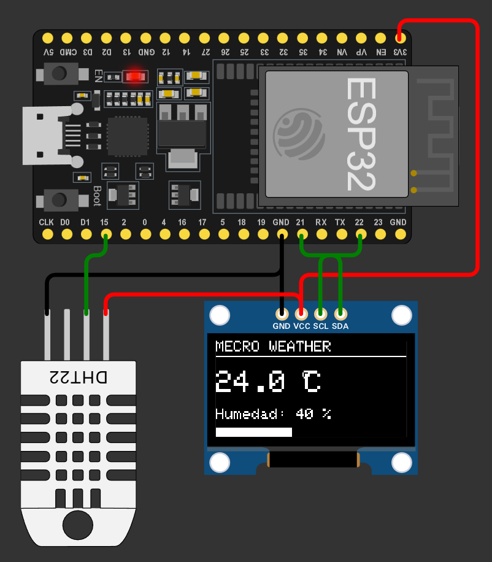
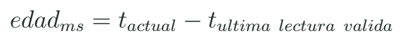

Sensores digitales, I2C y pantallas: un dato con identidad
Leer y presentar una variable conservando unidad, instante, estado de la lectura y dirección del dispositivo.
El valor no viaja solo
Una lectura de temperatura necesita unidad, instante y origen. El número 24 puede significar grados Celsius, un código de conversión o un valor anterior que quedó en la pantalla. El proyecto de estación de clima permite comenzar con esa distinción. El sensor adquiere; el programa interpreta; la pantalla presenta. Una actualización de pantalla no demuestra que haya ocurrido una adquisición nueva.

Separar tareas ayuda a organizarlas a velocidades distintas. Un sensor lento puede actualizarse cada cierto intervalo mientras la interfaz responde a un botón más a menudo. La última lectura se almacena junto a un indicador de validez y su tiempo. Cuando falla la adquisición, la aplicación puede mostrar FALLO o una lectura anterior con su antigüedad. Reemplazar todo error por cero confunde una ausencia de dato con una medida legítima.
La estación de clima del laboratorio usa un sensor DHT y una pantalla OLED. El sensor DHT no se convierte en I2C por compartir una placa con la pantalla. Cada conexión sigue su propio protocolo. Más adelante, la IMU sí compartirá I2C con una pantalla si direcciones y condiciones eléctricas son compatibles.
Qué ofrece un bus I2C
I2C utiliza una línea de datos y una de reloj con dispositivos identificados mediante dirección. En el perfil clásico de las prácticas usamos SDA21 y SCL22, cuando ese montaje lo permita. Esas conexiones sustituyen el semáforo que usaba algunos de los mismos pines: los ejercicios son configuraciones diferentes, no un único circuito acumulado de manera automática. La dirección se comprueba con el dispositivo real y con su biblioteca.
Tres comunicaciones del banco
| Interfaz | Organización | Ejemplo |
|---|---|---|
| UART | Flujo de bytes | Monitor serie |
| I2C | Bus con direcciones | OLED y MPU6050 |
| DHT | Señal y temporización propias | Temperatura y humedad |
Las líneas I2C necesitan condiciones de polarización compatibles. Algunos módulos ya incluyen resistencias pull-up y al conectarlos en paralelo cambia la resistencia equivalente. Lo importante para el primer montaje es identificar dónde van esas resistencias y a qué tensión se conectan. No se supone que cualquier módulo alimentado con 5 V produzca señales seguras para el ESP32. La ficha del módulo y las medidas del banco completan el esquema.
Dos dispositivos, una dirección
Dos módulos responden con la misma dirección fija. ¿Basta conectar ambos en paralelo y darles nombres distintos en C++?
Ver razonamiento del caso
No. Los nombres del programa no cambian la dirección del bus. Se revisan opciones de dirección o una arquitectura de bus adecuada.
Validez y antigüedad
Un registro mínimo puede contener valor, unidad, tiempo e indicador válido. Para tratar antigüedad se resta el tiempo de la última adquisición aceptada al tiempo actual. El umbral permitido depende de la misión y de la velocidad del sensor. Un dato ambiental de hace un segundo y uno de orientación de hace un segundo pueden tener utilidades muy diferentes. El curso pide nombrar el criterio de cada uno.

Tres situaciones de presentación
| Entrada | Pantalla útil | Registro |
|---|---|---|
| Lectura reciente | Valor y unidad | Instante nuevo |
| Lectura inválida | FALLO o aviso | Estado de error |
| Lectura antigua | Valor con edad | Última adquisición válida |
En bibliotecas que representan una lectura inválida mediante NaN, una comparación numérica corriente puede no comportarse como se espera. Hay que consultar la condición de validez y tratarla antes de decidir una salida. El ejemplo de clima ya contiene una comprobación isnan(); la clase explica para qué sirve y qué debe conservar el resto de la aplicación cuando se activa.
Cómo investigar una conexión
Fragmento de diagnóstico I2C
Wire.begin(21, 22);
Wire.beginTransmission(0x68);
uint8_t status = Wire.endTransmission();
bool acknowledged = (status == 0);Una respuesta en la dirección 0x68 indica que algún dispositivo reconoció esa dirección en esa prueba. No certifica por sí sola la identidad, la escala ni la calidad de sus medidas. La identificación de registro o el procedimiento de la biblioteca aporta otra comprobación. El diagnóstico se realiza primero sin mezclarlo con pantallas complejas, gráficas y múltiples sensores.
Una pantalla OLED se organiza mediante un controlador y una biblioteca que traduce texto o píxeles a comandos. La dirección habitual del ejemplo puede diferir en otro módulo. También hay pantallas de aspecto parecido con controladores distintos. Antes de cambiar el código del sensor, el equipo identifica si el problema pertenece al bus, al controlador de pantalla o a la lógica de presentación.
Pantalla congelada
La pantalla sigue mostrando 24,0 °C después de desconectar el sensor. ¿Qué dato del software falta consultar?
Ver razonamiento del caso
La validez y el instante de la última adquisición. El valor mostrado puede ser una copia antigua; hace falta una política explícita para ese estado.
Laboratorio de adquisición y presentación
- Abre el proyecto 7 y localiza sensor, pantalla y protocolos.
- Registra el tipo exacto de sensor que usa el archivo del simulador; no lo supongas por el título.
- Localiza periodo de lectura, periodo de pantalla y condición de fallo.
- Añade al registro una marca temporal y un estado de validez.
- Identifica los dispositivos I2C y sus direcciones con la prueba preparada por el docente.
- Provoca una ausencia de lectura en la simulación o con el procedimiento de banco indicado.
- Explica cómo cambia la presentación y qué valor conserva el registro.
En un montaje físico se revisa el circuito desconectado y se aplica el procedimiento de comprobación del banco. Si el sensor no puede desconectarse durante operación, se simula la condición por software y se declara ese origen. La finalidad del ejercicio es que la aplicación distinga dato y estado. No se presenta una inyección de error como una medición de fallo real del componente.
De la estación ambiental a una carga de sensores
Una carga de sensores para un UAV puede utilizar una arquitectura semejante: adquisición, procesamiento, almacenamiento y presentación. Los requisitos de tiempo y precisión cambian con la variable. La organización de módulos que aprendemos hoy permite añadir la IMU sin convertir todo el programa en una única función extensa. Cada dato llega acompañado de la información que permite usarlo con criterio.
Preguntas para cualquier sensor nuevo
| Pregunta | Dónde buscar |
|---|---|
| ¿Qué variable entrega? | Hoja de datos y biblioteca |
| ¿Con qué unidad? | API y escala configurada |
| ¿Cada cuánto es nueva? | Adquisición y marcas de tiempo |
| ¿Cómo informa fallo? | Resultado de la operación |
Investiga la diferencia entre dirección del bus, número de pin y nombre de la variable. Son referencias de niveles distintos. Para ampliar, compara UART, I2C y SPI con una tabla de líneas, organización y dispositivo de ejemplo. No necesitas implementar tres protocolos completos en una sesión: sí debes poder explicar por qué conectar la pantalla a un pin de sensor DHT no cumple la misma función.
Práctica guiada
- Mostrar un valor en pantalla y preguntar de cuándo es.
- Separar DHT, OLED e I2C en el esquema del proyecto.
- Agregar tiempo y validez al registro del clima.
- Relacionar el resultado con el futuro banco de IMU.
Preguntas de cierre
¿Actualizar OLED equivale a adquirir un dato?
No. Pueden ejecutarse con agendas distintas.
¿Una respuesta I2C confirma una medida correcta?
Confirma reconocimiento de dirección en esa prueba; faltan identidad, configuración y lectura.
¿Qué comunica mejor un fallo: cero o un estado?
Un estado explícito evita confundir ausencia con una medida numérica legítima.
Entrega
Mapa de interfaces y registro de valor, unidad, tiempo y estado.
Proyectos MECRO relacionados
- 07. Estación de Clima · Núcleo. Identidad de sensores y visualización Abrir referencia Wokwi
- 16. Nivel de Burbuja Digital · Núcleo. IMU estática y datos válidos Abrir referencia Wokwi
Fuentes para ampliar
[MECRO] MECRO. Laboratorio Electrónica con ESP32: veinte proyectos.
[WIRE] Espressif Systems. Arduino-ESP32: I2C.
[UART] Espressif Systems. Arduino-ESP32: Serial/UART.
[IMU] Adafruit. MPU6050: biblioteca, cableado y lectura.
[WOKWI] Wokwi. ESP32 Simulation: periféricos y límites.